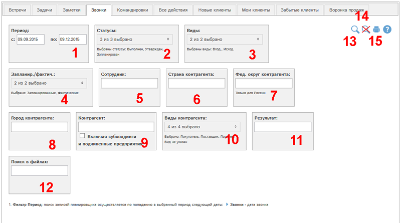
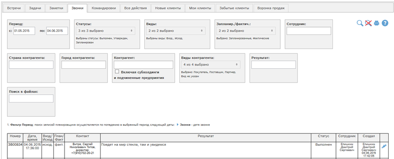

Отчет позволяет получить данные о звонках, доступных Вам в планировщике.

Рис. Форма отчета Звонки.
Доступны следующие фильтры и кнопки:
- Период - звонки отбираются по попаданию даты звонка в указанный период
- Отбор по статусам звонков
- Отбор по видам (входящий, исходящий) звонков
- Отбор запланированных и/или фактических звонков
- Отбор по сотруднику, проводившему звонок
- Отбор по стране контрагента звонка
- Отбор по федеральному округу звонка. Функция доступна только для России. При выборе федерального округа автоматически выбирается страна Россия.
- Отбор по городу контрагента звонка
- Отбор по контрагенту звонка. Галочка "Включая субхолдинги и подчиненные предприятия" позволяет выбрать в отчет также данные по субхолдингам и подчиненным предприятиям выбранных контрагентов.
- Отбор по виду контрагентов звонка
- Отбор по фрагменту описания результата звонка.
- Искать по фрагменту в приложенных файлах. Поиск по вложенным файлам доступен для файлов следующих типов: txt, docx, xlsx, xls, csv, pptx.
- Показать отчет по выбранным фильтрам
- Сбросить все фильтры
- Получить печатную версию отчета по выбранным фильтрам в pdf-формате.
Рассмотрим пример отчета со значениями фильтров по умолчанию. Для этого нажмем кнопку  :
:
